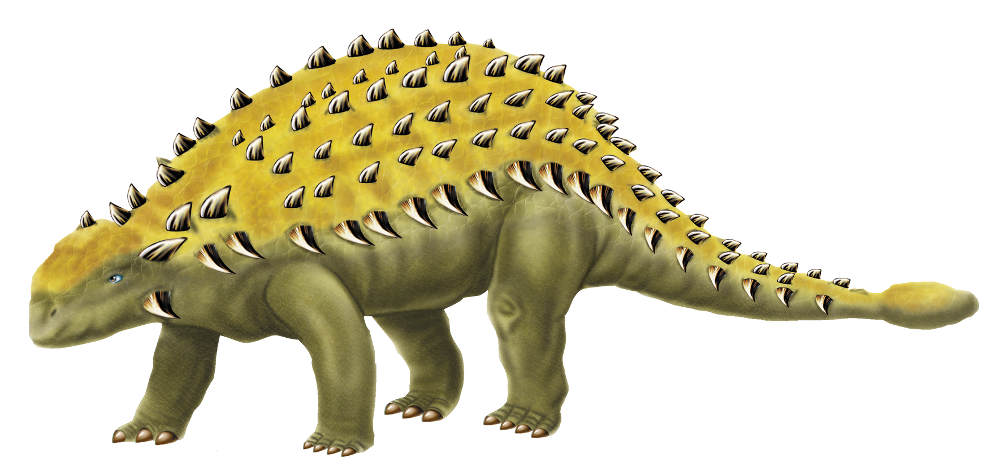
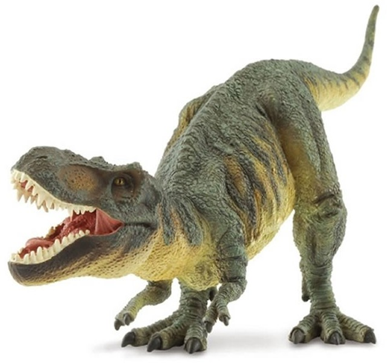
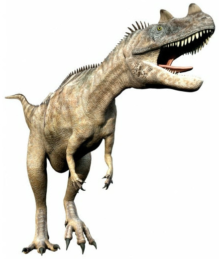
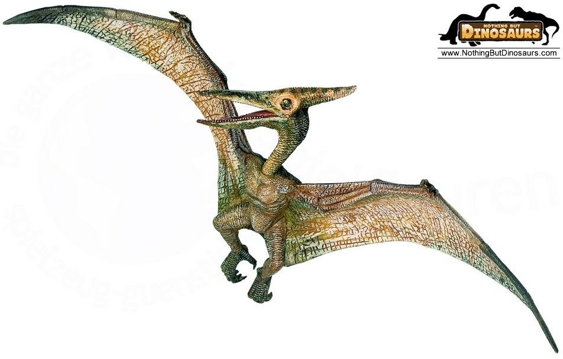

|
The length of the train engine is 438 centimeters. The length of the first carriage is about 259 centimeters.
The length of the second carriage is about 367 centimeters. Estimate the total length of the train and the carriages. |
| There are 2 dinosaurs. If we round their ages to the nearest hundred, then add them together. The estimated sum is 600. The dinosaur on the left is 247 years old. How oldest can the dinosaur on the right be? |
|  |  |  |  | ||
| Age (years old) |
94 | 103 | 158 | 85 |